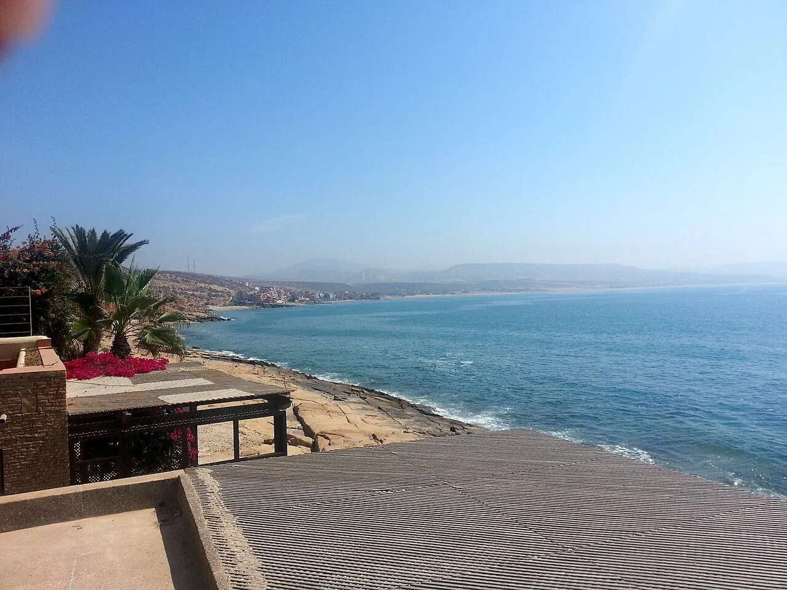

Plage de Taghazout
Agadir, Maroc · surf, bodyboard

Village de pêcheurs devenu capitale du surf marocain. Au pied du village, la plage accueille les débutants tandis que les pointes voisines attirent les confirmés.
- Lieu
- Agadir, Maroc
- Niveau
- Débutant
- Activités
- surf, bodyboard
- Type d'eau
- Mer / océan
- Coordonnées
- 30.55, -9.71 (position approximative du secteur)
Dangers à connaître
- Pointes rocheuses et oursins.
- Écoles nombreuses.
Le conseil d'Ocean Buddy
Les meilleurs mois vont d’octobre à mars, quand les houles d’hiver arrivent.
Ouvrir dans Ocean Buddy Télécharger sur l'App Store
Source : Fiche Ocean Buddy · septembre 2026 · à vérifier localement.